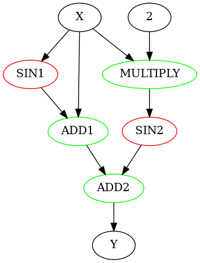

Tensorflow Lite Internal
Table of Contents
1 TFLite Internal
1.1 Overview
int main(int argc, char* argv[]) { if (argc != 2) { fprintf(stderr, "square <tflite model>\n"); return 1; } const char* filename = argv[1]; std::unique_ptr<tflite::FlatBufferModel> model = tflite::FlatBufferModel::BuildFromFile(filename); tflite::ops::builtin::BuiltinOpResolver resolver; InterpreterBuilder builder(*model, resolver); std::unique_ptr<Interpreter> interpreter; builder(&interpreter); interpreter->AllocateTensors(); float* input = interpreter->typed_input_tensor<float>(0); input[0] = 10; interpreter->Invoke(); float* output = interpreter->typed_output_tensor<float>(0); printf("%f\n", output[0]); return 0; }
1.1.1 BuiltinOpResolver
注册各个 op 对应的 Invoke 函数, 例如 abs 最终会对应 AbsEval, 后者最终会调用 std::abs
BuiltinOpResolver::BuiltinOpResolver() { AddBuiltin(BuiltinOperator_ABS, Register_ABS()); AddBuiltin(BuiltinOperator_RELU, Register_RELU(), 1, 2); // ... AddBuiltin(BuiltinOperator_MAX_POOL_2D, Register_MAX_POOL_2D(), 1, 3); AddBuiltin(BuiltinOperator_L2_POOL_2D, Register_L2_POOL_2D()); AddBuiltin(BuiltinOperator_CONV_2D, Register_CONV_2D(), 1, 5); // .... AddBuiltin(BuiltinOperator_FULLY_CONNECTED, Register_FULLY_CONNECTED(), 1, 9); // ... } void MutableOpResolver::AddBuiltin(tflite::BuiltinOperator op, const TfLiteRegistration* registration, int version) { TfLiteRegistration new_registration = *registration; new_registration.custom_name = nullptr; new_registration.builtin_code = op; new_registration.version = version; auto op_key = std::make_pair(op, version); builtins_[op_key] = new_registration; } TfLiteRegistration* Register_ABS() { static TfLiteRegistration r = { // init nullptr, // free nullptr, // prepare elementwise::GenericPrepare<elementwise::IsNumericSupportedType, elementwise::kAbsName>, // invoke elementwise::AbsEval}; return &r; } TfLiteStatus AbsEval(TfLiteContext* context, TfLiteNode* node) { return EvalNumeric(context, node, std::abs); } inline TfLiteStatus EvalNumeric(TfLiteContext* context, TfLiteNode* node, float float_func(float)) { return EvalImpl<float>(context, node, float_func, kTfLiteFloat32); } template <typename T> inline TfLiteStatus EvalImpl(TfLiteContext* context, TfLiteNode* node, T func(T), TfLiteType expected_type) { const TfLiteTensor* input = GetInput(context, node, 0); TfLiteTensor* output = GetOutput(context, node, 0); TF_LITE_ENSURE_TYPES_EQ(context, input->type, expected_type); const int64_t num_elements = NumElements(input); const T* in_data = GetTensorData<T>(input); T* out_data = GetTensorData<T>(output); for (int64_t i = 0; i < num_elements; ++i) { // !!! out_data[i] = std::abs(in_data[i]) out_data[i] = func(in_data[i]); } return kTfLiteOk; }
1.1.2 InterpreterBuilder
生成 interpreter, 主要是根据 model 中的 operator 及 resolver 中的 registration 生成 graph 及其中的 node 以便执行. 另外会用 delegate 把 graph 分割为不同的 subgraph 以分别执行.
TfLiteStatus InterpreterBuilder::operator()( std::unique_ptr<Interpreter>* interpreter, int num_threads) { // !!! 查找 resolver 中记录的 registration BuildLocalIndexToRegistrationMapping(); auto* subgraphs = model_->subgraphs(); auto* buffers = model_->buffers(); if (subgraphs->size() > 1) { (*interpreter)->AddSubgraphs(subgraphs->size() - 1); } for (int subgraph_index = 0; subgraph_index < subgraphs->size(); ++subgraph_index) { const tflite::SubGraph* subgraph = (*subgraphs)[subgraph_index]; tflite::Subgraph* modified_subgraph = (*interpreter)->subgraph(subgraph_index); auto operators = subgraph->operators(); auto tensors = subgraph->tensors(); modified_subgraph->AddTensors(tensors->size()); modified_subgraph->SetInputs( FlatBufferIntArrayToVector(subgraph->inputs())); modified_subgraph->SetOutputs( FlatBufferIntArrayToVector(subgraph->outputs())); // !!! 根据 operator 生成 node 及 execution_plan ParseNodes(operators, modified_subgraph); ParseTensors(buffers, tensors, modified_subgraph); std::vector<int> variables; for (int i = 0; i < modified_subgraph->tensors_size(); ++i) { auto* tensor = modified_subgraph->tensor(i); if (tensor->is_variable) { variables.push_back(i); } } modified_subgraph->SetVariables(std::move(variables)); } // !!! 是否使用 flex delegate 支持 tensorflow op (而不是 tflite builtin op) // https://www.tensorflow.org/lite/guide/ops_select?hl=zh-cn ApplyDelegates(interpreter->get(), num_threads) }
1.1.2.1 BuildLocalIndexToRegistrationMapping
查找之前 BuiltinOpResolver 注册的 registration
TfLiteStatus InterpreterBuilder::BuildLocalIndexToRegistrationMapping() { unresolved_custom_ops_.clear(); auto opcodes = model_->operator_codes(); int num_custom_ops = 0; // builtin_code 除了正常的如 BuiltinOperator_ABS 之类的, 还包含两种特殊的值: // BuiltinOperator\_CUSTOM // BuiltinOperator\_DELEGATE // // 其中对于 BuiltinOperator_CUSTOM, OperatorCode.custom_code (一个 string) // 用来区别这个 custom op 具体是什么. // 对于 custom op, BuiltinOpResolver 可以通过 AddCustom 添加对它的支持, // 或者 delegate 也可以支持它, 但 delegate 的支持并不会在 resolver 中体现, // 所以下面的代码会有 unresolved_custom_ops_ for (const OperatorCode* opcode : *opcodes) { if (opcode->builtin_code() == BuiltinOperator_CUSTOM) { num_custom_ops++; } } unresolved_custom_ops_.reserve(num_custom_ops); for (const OperatorCode* opcode : *opcodes) { const TfLiteRegistration* registration = nullptr; // !!! 查找 builtin_code 和 custom_code status = GetRegistrationFromOpCode(opcode, op_resolver_, error_reporter_, ®istration); // !!! op 在 resolver 中找不到 registration, 交给 delegate if (status != kTfLiteOk) { const auto* op_name = opcode->custom_code()->c_str(); unresolved_custom_ops_.push_back(CreateUnresolvedCustomOp(op_name)); registration = &unresolved_custom_ops_.back(); has_flex_op_ |= IsFlexOp(op_name); status = kTfLiteOk; } // !!! registration 按顺序记录下来 flatbuffer_op_index_to_registration_.push_back(registration); } return status; } GetRegistrationFromOpCode: *registration = op_resolver.FindOp(builtin_code, version); return builtins_.find(std::make_pair(op, version)); if (not_found_in_builtins): const char* name = opcode->custom_code()->c_str(); *registration = op_resolver.FindOp(name, version); return custom_ops_.find(std::make_pair(op, version));
1.1.2.2 ParseNode
TfLiteStatus InterpreterBuilder::ParseNodes( const flatbuffers::Vector<flatbuffers::Offset<Operator>>* operators, Subgraph* subgraph) { // Reduce the number of redundant allocations subgraph->ReserveNodes(operators->size()); for (int i = 0; i < operators->size(); ++i) { const auto* op = operators->Get(i); int index = op->opcode_index(); // !!! 找到 registration const TfLiteRegistration* registration = flatbuffer_op_index_to_registration_[index]; BuiltinOperator op_type = static_cast<BuiltinOperator>(registration->builtin_code); if (op_type == BuiltinOperator_CUSTOM) { subgraph->AddNodeWithParameters( FlatBufferIntArrayToVector(op->inputs()), FlatBufferIntArrayToVector(op->outputs()), FlatBufferIntArrayToVector(op->intermediates()), nullptr, 0, nullptr, registration); } else { void* builtin_data = nullptr; MallocDataAllocator malloc_allocator; TF_LITE_ENSURE_STATUS(ParseOpData(op, op_type, error_reporter_, &malloc_allocator, &builtin_data)); subgraph->AddNodeWithParameters( FlatBufferIntArrayToVector(op->inputs()), FlatBufferIntArrayToVector(op->outputs()), FlatBufferIntArrayToVector(op->intermediates()), nullptr, 0, builtin_data, registration); } } return status; } TfLiteStatus Subgraph::AddNodeWithParameters( const std::vector<int>& inputs, const std::vector<int>& outputs, const std::vector<int>& intermediates, const char* init_data, size_t init_data_size, void* builtin_data, const TfLiteRegistration* registration, int* node_index) { std::unique_ptr<void, decltype(free)*> builtin_data_deleter(builtin_data, free); int new_node_index = nodes_and_registration_.size(); if (node_index) *node_index = new_node_index; nodes_and_registration_.resize(nodes_and_registration_.size() + 1); auto& node_and_reg = nodes_and_registration_.back(); TfLiteNode& node = node_and_reg.first; if (node.inputs) TfLiteIntArrayFree(node.inputs); if (node.outputs) TfLiteIntArrayFree(node.outputs); if (node.intermediates) TfLiteIntArrayFree(node.intermediates); if (node.temporaries) TfLiteIntArrayFree(node.temporaries); node.inputs = ConvertVectorToTfLiteIntArray(inputs); node.outputs = ConvertVectorToTfLiteIntArray(outputs); node.intermediates = ConvertVectorToTfLiteIntArray(intermediates); node.temporaries = TfLiteIntArrayCreate(0); if (init_data) { node.user_data = OpInit(*registration, init_data, init_data_size); } else { node.user_data = OpInit( *registration, static_cast<const char*>(builtin_data_deleter.get()), 0); } node.builtin_data = builtin_data_deleter.release(); if (registration->builtin_code == BuiltinOperator_CUSTOM) { // When it's a CUSTOM op, the `custom_options` field in the Flatbuffer // `Operator` table is passed in. node.custom_initial_data = init_data; node.custom_initial_data_size = init_data_size; } else { node.custom_initial_data = nullptr; node.custom_initial_data_size = 0; } node.delegate = nullptr; // Copying of registration is required to support unresolved custom ops. node_and_reg.second = *registration; // !!! execution_plan_ 表示 subgraph invoke 时各个 node (operator) 执行的顺 // 序, 实际上 tflite 模型中的 operator 已经是拓扑排序的了, 所以 // execution_plan_ 基本上和 operator 顺序相同, 除非涉及到 delegate execution_plan_.push_back(new_node_index); return kTfLiteOk; }
1.1.3 AllocateTensors
1.1.3.1 constant allocation
constant 直接把 flatbuffer mmap 进来使用
TfLiteStatus InterpreterBuilder::ParseTensors( const flatbuffers::Vector<flatbuffers::Offset<Buffer>>* buffers, const flatbuffers::Vector<flatbuffers::Offset<Tensor>>* tensors, Subgraph* subgraph) { auto get_readonly_data = [&](const char** buffer_data, size_t* buffer_size) { *buffer_data = nullptr; // !!! 如果是 constant tensor, 则 tensor->buffer() 指向 floatbuffer 中 // constant tensor 的数据, 这个数据是直接通过 mmap 映射进来 (flatbuffer // 相比 protocalbuffer 的优势) if (tensor->buffer() == 0) return kTfLiteOk; if (auto* buffer = (*buffers)[tensor->buffer()]) { if (auto* array = buffer->data()) { if (size_t size = array->size()) { *buffer_size = size; *buffer_data = reinterpret_cast<const char*>(array->data()); return kTfLiteOk; } } } return kTfLiteOk; }; get_readonly_data(&buffer_ptr, &buffer_size); if (buffer_ptr) { subgraph->SetTensorParametersReadOnly( i, type, get_name(tensor), dims, quantization, buffer_ptr, buffer_size, allocation_, sparsity); tensor.data.raw = const_cast<char*>(buffer); } else { subgraph->SetTensorParametersReadWrite( i, type, get_name(tensor), dims, quantization, is_variable, dims_signature_rank, dims_signature_data); // !!! kTfLiteArenaRw 与 kTfLiteArenaRwPersistent // 最终会分配到不同的 buffer TfLiteAllocationType allocation_type = kTfLiteArenaRw; if (is_variable) { allocation_type = kTfLiteArenaRwPersistent; } tensor.data.raw = 0; tensor.allocation_type = allocation_type; tensor.bytes = required_bytes; // ... }
1.1.3.2 tensor allocation
tensor, 包括:
- variable (可训练的参数) tensor
- intermediate tensor
- temporary tensor
TfLiteStatus Subgraph::AllocateTensors(){PrepareOpsAndTensors()} PrepareOpsAndTensors() { // !!! preserve_inputs 默认为 true, 所以多次运行时不需要重复给 input tensor // 赋值 // // preserve_intermediates 为 false, 所以无法查询中间结果 memory_planner_.reset(new ArenaPlanner( &context_, std::unique_ptr<GraphInfo>(new InterpreterInfo(this)), /*preserve_inputs=*/true, /*preserve_intermediates*/ false, kDefaultTensorAlignment)); memory_planner_->PlanAllocations(); memory_planner_->ExecuteAllocations( next_execution_plan_index_to_plan_allocation_, last_exec_plan_index_prepared)); }
1.1.3.2.1 PlanAllocations
- 标记只些 tensor 不能被覆盖 (通过 refcount)
- 记录 tensor 的 start_node 和 finish_node, 即 tensor 的生命期, 生命期不重叠的 tensor 可以共用内存
TfLiteStatus ArenaPlanner::PlanAllocations() { alloc_node_.assign(graph_info_->num_tensors(), kNodeNotAssigned); dealloc_node_.assign(graph_info_->num_tensors(), kNodeNotAssigned); std::vector<int> refcounts(graph_info_->num_tensors(), 0); // !!! alloc_node_ 和 dealloc_node_ 用来记录 tensor 的 start_node 和 // finish_node auto allocate = [this](int node, int tensor) -> TfLiteStatus { // !!! alloc_nodes_ 需要记录`第一个`使用这个 tensor 的 node, 所以需要这 // 个判断 if (alloc_node_[tensor] != kNodeNotAssigned) { // !!! Tensor has already been allocated. return kTfLiteOk; } alloc_node_[tensor] = node; }; auto deallocate = [this](int node, int tensor) -> TfLiteStatus { // !!! dealloc_node_ 需要记录`最后一个`使用这个 tensor 的 node, 所以不需 // 要像 alloc_node_ 那样判断 dealloc_node_[tensor] = node; }; // !!! ----------------------------- // !!! We must make sure the output tensors are never overwritten. We do // that by artificially adding one to their ref-counts so they are never // selected for deallocation. for (int tensor_index : graph_info_->outputs()) { refcounts[tensor_index]++; } // !!! Variable tensors also should be ensured to be never overwritten and // need to be alive all the time. for (int tensor_index : graph_info_->variables()) { refcounts[tensor_index]++; } // !!! Queue all graph inputs for allocation. If preserve_inputs_ is true, // make sure they never be overwritten. for (int tensor_index : graph_info_->inputs()) { if (preserve_inputs_) { refcounts[tensor_index]++; } // graph inputs 的 start_node 必然是 node[0] allocate(0, tensor_index); } // Queue all graph variable tensors for allocation. for (int tensor_index : graph_info_->variables()) { // Increase the reference count for input tensors by one, so it will // never be deallocated. allocate(0, tensor_index); } // Queue all graph inputs for allocation. for (int tensor_index : graph_info_->inputs()) { if (tensor_index != kTfLiteOptionalTensor) { allocate(0, tensor_index); } } // !!! ----------------------------- // Count references to node input tensors. for (size_t i = 0; i < graph_info_->num_nodes(); ++i) { const TfLiteNode& node = graph_info_->node(i); TfLiteIntArray* node_inputs = node.inputs; for (int j = 0; j < node_inputs->size; ++j) { int tensor_index = node_inputs->data[j]; refcounts[tensor_index]++; } } // !!! ----------------------------- // Go through the graph in execution order. for (size_t i = 0; i < graph_info_->num_nodes(); ++i) { const TfLiteNode& node = graph_info_->node(i); // First queue output tensors for allocation. TfLiteIntArray* node_outputs = node.outputs; for (int j = 0; j < node_outputs->size; ++j) { int tensor_index = node_outputs->data[j]; allocate(i, tensor_index); } // Then update the ref-counts of the node's inputs, and if necessary // queue them for deallocation. if (!preserve_intermediates_) { TfLiteIntArray* node_inputs = node.inputs; for (int j = 0; j < node_inputs->size; ++j) { int tensor_index = node_inputs->data[j]; refcounts[tensor_index]--; if (refcounts[tensor_index] == 0) { deallocate(i, tensor_index); } } } } }
1.1.3.2.2 ExecuteAllocations
CalculateAllocations
根据 [start_node, finish_node] 找到所有有重叠 (冲突) 的 alloc, 然后根据 bestfit 分配一个 alloc
Commit
CalculateAllocations 分配 alloc 同时会维护 high_water_mark_ 记录最大需要的内存, Commit 会 malloc 这一段 underlying_buffer
ResolveTensorAllocation
underlying_buffer 做为 base address, 根据各个 alloc 中记录的 offset 更新最终的 tensor->data 地址
TfLiteStatus ArenaPlanner::ExecuteAllocations(int first_node, int last_node) { // Grow the size of `allocs_` if necessary. This allows allocating temporary // tensors in op's `prepare` function. alloc_node_.resize(graph_info_->num_tensors(), kNodeNotAssigned); dealloc_node_.resize(graph_info_->num_tensors(), kNodeNotAssigned); allocs_.resize(graph_info_->num_tensors()); // Set allocation and deallocation for temporary tensors. for (size_t i = first_node; i <= static_cast<size_t>(last_node) && i < graph_info_->num_nodes(); ++i) { const TfLiteNode& node = graph_info_->node(i); TfLiteIntArray* node_temporaries = node.temporaries; for (int j = 0; j < node_temporaries->size; ++j) { int tensor_index = node_temporaries->data[j]; alloc_node_[tensor_index] = i; dealloc_node_[tensor_index] = i; } } CalculateAllocations(first_node, last_node); Commit(); for (int i = 0; i < static_cast<int>(graph_info_->num_tensors()); ++i) { ResolveTensorAllocation(i); } }
- CalculateAllocations
TfLiteStatus ArenaPlanner::CalculateAllocations(int first_node, int last_node) { // Indices of tensors in order their allocation offsets will be calculated. const std::vector<int32_t> tensor_order = CreateTensorAllocationVector(first_node, last_node); for (const auto& tensor_index : tensor_order) { TfLiteTensor& tensor = *graph_info_->tensor(tensor_index); if (tensor.allocation_type == kTfLiteArenaRw) { arena_.Allocate(context_, tensor_alignment_, tensor.bytes, tensor_index, alloc_node_[tensor_index], dealloc_node_[tensor_index], &allocs_[tensor_index]); } if (tensor.allocation_type == kTfLiteArenaRwPersistent) { persistent_arena_.Allocate( context_, tensor_alignment_, tensor.bytes, tensor_index, /*first_node=*/alloc_node_[tensor_index], /*last_node=*/std::numeric_limits<int32_t>::max(), &allocs_[tensor_index]); } } } TfLiteStatus SimpleMemoryArena::Allocate( TfLiteContext* context, size_t alignment, size_t size, int32_t tensor, int32_t first_node, int32_t last_node, ArenaAllocWithUsageInterval* new_alloc) { new_alloc->tensor = tensor; new_alloc->first_node = first_node; new_alloc->last_node = last_node; new_alloc->size = size; // If we don't find a better gap just allocate at the end of the buffer. const size_t kOffsetNotAssigned = std::numeric_limits<size_t>::max(); size_t best_offset = kOffsetNotAssigned; size_t best_offset_fit = kOffsetNotAssigned; // Go through the sorted allocs and look at the gaps between them. size_t current_offset = 0; for (const auto& alloc : ordered_allocs_) { if (alloc.last_node < first_node || alloc.first_node > last_node) { // !!! 没有重叠的 alloc 相当于空闲的 buffer continue; } // If we found a gap larger than required size, and smaller than previous // best fit, take it. if (current_offset + size <= alloc.offset && alloc.offset - current_offset < best_offset_fit) { best_offset = current_offset; best_offset_fit = alloc.offset - current_offset; } current_offset = std::max(current_offset, alloc.offset + alloc.size); } if (best_offset == kOffsetNotAssigned) { best_offset = current_offset; } // Update the required buffer size. high_water_mark_ = std::max(high_water_mark_, best_offset + size); new_alloc->offset = best_offset; auto insertion_it = ordered_allocs_.begin(); while (insertion_it != ordered_allocs_.end() && *insertion_it < *new_alloc) { ++insertion_it; } ordered_allocs_.insert(insertion_it, *new_alloc); }
- Commit
TfLiteStatus SimpleMemoryArena::Commit(TfLiteContext* context) { size_t required_size = RequiredBufferSize(); // !!! malloc char* new_alloc = new char[required_size]; char* new_underlying_buffer_aligned_ptr = reinterpret_cast<char*>( AlignTo(arena_alignment_, reinterpret_cast<intptr_t>(new_alloc))); underlying_buffer_.reset(new_alloc); underlying_buffer_size_ = required_size; underlying_buffer_aligned_ptr_ = new_underlying_buffer_aligned_ptr; }
- ResolveTensorAllocation
TfLiteStatus ArenaPlanner::ResolveTensorAllocation(int tensor_index) { TfLiteTensor& tensor = *graph_info_->tensor(tensor_index); if (tensor.allocation_type == kTfLiteArenaRw) { // Skip resolution if the size of the tensor is zero, leaving it as a // nullptr. arena_.ResolveAlloc(context_, allocs_[tensor_index], &tensor.data.raw); } if (tensor.allocation_type == kTfLiteArenaRwPersistent) { persistent_arena_.ResolveAlloc(context_, allocs_[tensor_index], &tensor.data.raw); } } TfLiteStatus SimpleMemoryArena::ResolveAlloc( TfLiteContext* context, const ArenaAllocWithUsageInterval& alloc, char** output_ptr) { if (alloc.size == 0) { *output_ptr = nullptr; } else { *output_ptr = underlying_buffer_aligned_ptr_ + alloc.offset; } }
1.1.4 Interpreter.Invoke
Interpreter::Invoke: primary_subgraph().Invoke() for (int execution_plan_index = 0; execution_plan_index < execution_plan_.size(); execution_plan_index++): int node_index = execution_plan_[execution_plan_index]; TfLiteNode& node = nodes_and_registration_[node_index].first; const TfLiteRegistration& registration = nodes_and_registration_[node_index].second; OpInvoke(registration, &node) // !!! 调用到 resolver 中注册的 registration 中的 .invoke, 例如 AbsEval registration.invoke(node)
1.2 TFLite Delegate
1.2.1 A Simple Model
\(f(x)=sin(x)+x+sin(x*2)\)
import tensorflow as tf from tensorflow.keras import layers, Model input=layers.Input(shape=(1, )) output=layers.Lambda(lambda x: tf.sin(x)+x+tf.sin(x*2))(input) model=Model(inputs=input,outputs=output) model.summary() print(model.predict([2.])) model.save("/tmp/sin")
Model: "model"
_
Layer (type) Output Shape Param #
===============================================================
input_1 (InputLayer) [(None, 1)] 0
_
lambda (Lambda) (None, 1) 0
===============================================================
Total params: 0
Trainable params: 0
Non-trainable params: 0
_
2.152495
import tensorflow as tf converter = tf.lite.TFLiteConverter.from_saved_model("/tmp/sin") tflite = converter.convert() with open ("/tmp/sin.tflite","wb") as f: f.write(tflite) print("size of sin.tflite:", len(tflite))
size of sin.tflite: 1240
1.2.2 MyDelegate
#include <cstdio> #include "tensorflow/lite/builtin_ops.h" #include "tensorflow/lite/interpreter.h" #include "tensorflow/lite/kernels/kernel_util.h" #include "tensorflow/lite/kernels/register.h" #include "tensorflow/lite/model.h" #include "tensorflow/lite/optional_debug_tools.h" #include "tensorflow/lite/util.h" using namespace tflite; class MyDelegate { public: static bool SupportedOp(const TfLiteRegistration* registration) { return registration->builtin_code == kTfLiteBuiltinSin; } bool Invoke(TfLiteContext* context, TfLiteNode* node) { // !!! 这里 invoke 的实现是有问题的, 它假设了 subset 里只有一个 sin, 实 // 际上多个连续的 sin 例如 tf.sin(tf.sin(x)) 会生成多个 sin node, 而对一 // 个 subset 只会生成一个 delegate node... // 正确的做法是从 TfLiteDelegateParams 中获得所有的 node 信息但依次执行, // 例如 flex::Eval 的做法: // // TfLiteStatus DelegateKernel::Eval(TfLiteContext* context, TfLiteNode* node) { // // Execute the TensorFlow Ops sequentially. // for (auto& node_data : op_data_->nodes) { // auto status = ExecuteFlexOp(context, buffer_map, node_data.get()); // TF_LITE_ENSURE_OK(context, ConvertStatus(context, status)); // } // printf("sunway : invoke\n"); const TfLiteTensor* input = GetInput(context, node, 0); TfLiteTensor* output = GetOutput(context, node, 0); float* input_data = input->data.f; float* output_data = output->data.f; const int M = input->dims->size; const int N = input->dims->data[0]; for (int i = 0; i < M; i++) { for (int j = 0; j < N; ++j) { output_data[i * N + j] = sin(input_data[i * N + j]); } } return kTfLiteOk; } }; TfLiteRegistration GetMyDelegateNodeRegistration() { TfLiteRegistration kernel_registration; kernel_registration.builtin_code = kTfLiteBuiltinDelegate; kernel_registration.custom_name = "MyDelegate"; kernel_registration.free = NULL; kernel_registration.init = [](TfLiteContext* context, const char* buffer, size_t) -> void* { const TfLiteDelegateParams* delegate_params = reinterpret_cast<const TfLiteDelegateParams*>(buffer); MyDelegate* my_delegate = new MyDelegate; return my_delegate; }; kernel_registration.invoke = [](TfLiteContext* context, TfLiteNode* node) -> TfLiteStatus { printf("kerenl_invoke\n"); MyDelegate* kernel = reinterpret_cast<MyDelegate*>(node->user_data); kernel->Invoke(context, node); return kTfLiteOk; }; kernel_registration.prepare = NULL; return kernel_registration; } TfLiteStatus MyDelegatePrepare(TfLiteContext* context, TfLiteDelegate* delegate) { std::vector<int> supported_nodes; TfLiteIntArray* plan; TF_LITE_ENSURE_STATUS(context->GetExecutionPlan(context, &plan)); TfLiteNode* node; TfLiteRegistration* registration; for (int i = 0; i < plan->size; i++) { int node_index = plan->data[i]; TF_LITE_ENSURE_STATUS(context->GetNodeAndRegistration( context, node_index, &node, ®istration)); if (MyDelegate::SupportedOp(registration)) { supported_nodes.push_back(node_index); } } TfLiteRegistration my_delegate_kernel_registration = GetMyDelegateNodeRegistration(); TfLiteIntArray* supported_nodes_int_array = ::tflite::ConvertVectorToTfLiteIntArray(supported_nodes); // !!! replace node with new delegate registration auto status = context->ReplaceNodeSubsetsWithDelegateKernels( context, my_delegate_kernel_registration, supported_nodes_int_array, delegate); TfLiteIntArrayFree(supported_nodes_int_array); return status; } TfLiteDelegate* CreateMyDelegate() { TfLiteDelegate* delegate = new TfLiteDelegate; delegate->data_ = nullptr; delegate->flags = kTfLiteDelegateFlagsNone; delegate->Prepare = &MyDelegatePrepare; delegate->CopyFromBufferHandle = NULL; delegate->CopyToBufferHandle = NULL; delegate->FreeBufferHandle = NULL; return delegate; } int main(int argc, char* argv[]) { const char* filename = "/tmp/sin.tflite"; std::unique_ptr<tflite::FlatBufferModel> model = tflite::FlatBufferModel::BuildFromFile(filename); tflite::ops::builtin::BuiltinOpResolver resolver; InterpreterBuilder builder(*model, resolver); std::unique_ptr<Interpreter> interpreter; builder(&interpreter); auto* my_delegate = CreateMyDelegate(); // !!! ModifyGraphWithDelegate if (interpreter->ModifyGraphWithDelegate(my_delegate) != kTfLiteOk) { printf("sunway:ModifyGraphWithDelegate failed\n"); } interpreter->AllocateTensors(); float* input = interpreter->typed_input_tensor<float>(0); input[0] = 2.0; interpreter->Invoke(); float* output = interpreter->typed_output_tensor<float>(0); printf("%f\n", output[0]); return 0; }
1.2.3 ModifyGraphWithDelegate
TfLiteStatus Subgraph::ModifyGraphWithDelegate(TfLiteDelegate* delegate): TfLiteStatus status = delegate->Prepare(&context_, delegate); // !!! Prepare 如前面的 MyDelegatePrepare, 负责扫描所有 node, 找到能处理的 // node, 然后调用 ReplaceNodeSubsetsWithDelegateKernels 来替换 node 和 // execution plan
1.2.4 ReplaceNodeSubsetsWithDelegateKernels
ReplaceNodeSubsetsWithDelegateKernels 的作用是把所有 node 拆成不同的 node_subset, 例如前面的 \(f(x)=sin(x)+x+sin(x*2)\), 其结构为:
digraph G { SIN1 [color=red] SIN2 [color=red] MULTIPLY [color=green] ADD1 [color=green] ADD2 [color=green] X->SIN1->ADD1->ADD2 X->ADD1 X->MULTIPLY 2->MULTIPLY->SIN2->ADD2->Y }

一个五个 node 划分为四个按顺排列的 subset:
- SIN1
- ADD1, MULTIPLY
- SIN2
- ADD2
划分的原则是:
- 属于不同 delegate 的 node 需要分开
- 在满足 input, output 依赖的前提下, 属于同一个 delegate 的 node 划分在一起, 如上面的 (ADD1, MULTIPLY)
- 各个 subset 要按 topo 排序, 因为 ReplaceNodeSubsetsWithDelegateKernels 时会线性的遍历 subset 构造了一个线性的 execution_plan
TfLiteStatus Subgraph::ReplaceNodeSubsetsWithDelegateKernels( TfLiteRegistration registration, const TfLiteIntArray* nodes_to_replace, TfLiteDelegate* delegate) { registration.builtin_code = BuiltinOperator_DELEGATE; // Analyze the graph to find all independent node_subsets that are either // fully not\-this\-delegate or this\-delegate computation. InterpreterInfo info(this); std::vector<NodeSubset> node_subsets; // !!! 分为多个 subset PartitionGraphIntoIndependentNodeSubsets(&info, nodes_to_replace, &node_subsets); execution_plan_.clear(); // !!! 按顺序遍历 subset, 因为各个 subset 之间已经是 topo 有序的 for (auto& node_subset : node_subsets) { switch (node_subset.type) { // !!! node 不属于 delegate, 不需要替换, 直接追加到 execution_plan_ case NodeSubset::kTfNonPartition: for (auto it = node_subset.nodes.begin(); it != node_subset.nodes.end(); ++it) { execution_plan_.push_back(*it); } break; // !!! 对于 delegate, 需要生成一个新的 node 代替subset 中的 node(可 // 能为多个 node, delegate 的 TfLiteDelegateParams 能拿到哪些 node // 被替换), 然后追加到 execution\_plan\_, 新的 node 会使用delegate 的 // registration case NodeSubset::kTfPartition: { int node_index; TfLiteDelegateParams* params = CreateDelegateParams(delegate, node_subset); AddNodeWithParameters( node_subset.input_tensors, node_subset.output_tensors, {}, nullptr, 0, params, ®istration, &node_index) // Initialize the output tensors's delegate-related fields. for (int tensor_index : node_subset.output_tensors) { TfLiteTensor* tensor = &tensors_[tensor_index]; TF_LITE_ENSURE(&context_, tensor->delegate == nullptr || tensor->delegate == delegate); tensor->delegate = delegate; } // Associate the node with the delegate. TfLiteNode* node = &nodes_and_registration_[node_index].first; node->delegate = delegate; } break; } } }
1.2.5 PartitionGraphIntoIndependentNodeSubsets
while (changed): subset = new array() changed = false is_delegate = nil for node in nodes: skip if node.input is not ready skip if node.visited if is_delegate is nil: is_delegate = node.is_delegate skip if node.is_delegate != is_delegate subset.push(node) node.visited = true node.output.ready = true if subset is not empty: subsets.push(subset) changed = true
1.2.6 Delegate 与 Custom Op 的区别
Delegate 实际上利用了 Custom Op 的机制, 例如 Delegate Op 也是一种特殊的 Custom Op, 它们都会给 node 注册了一个 registration, 使得执行该 node 时会执行到自定义的 Invoke
但 delegate 比 Custom Op 多了一个 partition 的操作, 即它会尽量的把 delegate op 放在同一个 node 里, 例如:
X->A1->A2->D1->D2->D3-Y
假设用 Custom Op 实现 D1, D2, D3 (用 CD1 表示 D1 使用 AddCustom 指定的 registration), 则变为:
X->A1->A2->CD1->CD2->CD3-Y
用 delegate 实现 D1, D2, D3 则变为:
X->A1->A2->CD->Y
其中 CD 对应 delegate 对 D1, D2, D3 的实现, 这样做的好处是:
D1, D2 的输出变成了 delegate 设备内部的中间结果, 不必传递给主设备 (CPU)
1.2.7 Flex Delegate
1.2.7.1 Tflite Converter
1.2.7.1.1 target ops
converter.target_spec.supported_ops = [tf.lite.OpsSet.TFLITE_BUILTINS,
tf.lite.OpsSet.SELECT_TF_OPS]
通过设置 converter 的 supported_ops, 可以影响生成 tflite 的过程
if target_ops: if set(target_ops) == set([OpsSet.TFLITE_BUILTINS, OpsSet.SELECT_TF_OPS]): toco.enable_select_tf_ops = True elif set(target_ops) == set([OpsSet.SELECT_TF_OPS]): toco.enable_select_tf_ops = True toco.force_select_tf_ops = True
通过 supported_ops, 可以控制是否 enable_select_tf_ops 或 force_select_tf_ops:
- 若 force_select_tf_ops, 即 toco (Tensorflow Optimized COnverter) 会把所有 op 都转换为 tf_op (即 flex delegate op)
- 若 enable_select_tf_ops (而非 force_select_tf_ops), 则 builtin_op 之外的 op 会转换为 tf_op
1.2.7.1.2 export
// !!! 当前 flex op 有一个 allowlist, 表示哪些 tf op 可以支持 if (enabled_op_types_.contains(OpType::kSelectTf) && IsAllowlistedFlexOp(node_def->op())) { // !!! kFlexOpNamePrefix = "Flex" // flex op 例如 Abs 会被修改为名为 FlexAbs 的 custom_op op_name = std::string(kFlexOpNamePrefix) + node_def->op(); // !!! node_def->op() (即 op name, 例如 Abs) 在 CreateFlexOpCustomOptions 时 // 会写在 custom options, flex delegate 会从 custom options 中读到 op name, // 再去执行, 而不是直接用 custom name 去掉 "Flex" 前缀 if (auto options = CreateFlexOpCustomOptions(*node_def, inst->getLoc())) { custom_options = *options; } else { return llvm::None; }
1.2.7.2 Flex Delegate Impl
1.2.7.2.1 ApplyDelegates
TfLiteStatus InterpreterBuilder::ApplyDelegates(Interpreter* interpreter, int num_threads) { if (has_flex_op_) { if (auto flex_delegate = AcquireFlexDelegate()) { return interpreter->ModifyGraphWithDelegate(std::move(flex_delegate)); } } return kTfLiteOk; } TfLiteStatus InterpreterBuilder::BuildLocalIndexToRegistrationMapping() { for (const OperatorCode* opcode : *opcodes) { const TfLiteRegistration* registration = nullptr; status = GetRegistrationFromOpCode(opcode, op_resolver_, error_reporter_, ®istration); if (status != kTfLiteOk) { // !!! flex op 首先是 custom_op if (opcode->builtin_code() != BuiltinOperator_CUSTOM) { return status; } const auto* op_name = opcode->custom_code()->c_str(); // !!! op_name 是否有 "Flex" 前缀 has_flex_op_ |= IsFlexOp(op_name); } } return status; } bool IsFlexOp(const char* custom_name) { return custom_name && strncmp(custom_name, kFlexCustomCodePrefix, strlen(kFlexCustomCodePrefix)) == 0; }
1.2.7.2.2 Flex Delegate
- IsNodeSupportedByDelegate
bool FlexDelegate::IsNodeSupportedByDelegate( const TfLiteRegistration* registration, const TfLiteNode* node, TfLiteContext* context) const { return IsFlexOp(registration->custom_name); }
- Eval
TfLiteStatus DelegateKernel::Eval(TfLiteContext* context, TfLiteNode* node) { // Execute the TensorFlow Ops sequentially. for (auto& node_data : op_data_->nodes) { TFLITE_SCOPED_DELEGATE_OPERATOR_PROFILE( reinterpret_cast<Profiler*>(context->profiler), node_data->name().c_str(), node_data->index()); // node_data->name() 是类似于 Abs 这样的 string auto status = ExecuteFlexOp(context, buffer_map, node_data.get()); TF_LITE_ENSURE_OK(context, ConvertStatus(context, status)); } } tensorflow::Status InitializeNodeDef(const void* custom_initial_data, int custom_initial_data_size) { const flexbuffers::Vector& v = flexbuffers::GetRoot( reinterpret_cast<const uint8_t*>(custom_initial_data), custom_initial_data_size) .AsVector(); name_ = v[0].AsString().str(); } TfLiteStatus DelegateKernel::Init(TfLiteContext* context, const TfLiteDelegateParams* params) { for (auto node_index : TfLiteIntArrayView(params->nodes_to_replace)) { // !!! custom_initial_data status = node_data.InitializeNodeDef(node->custom_initial_data, node->custom_initial_data_size); } } TfLiteStatus Subgraph::AddNodeWithParameters( const std::vector<int>& inputs, const std::vector<int>& outputs, const std::vector<int>& intermediates, const char* init_data, size_t init_data_size, void* builtin_data, const TfLiteRegistration* registration, int* node_index) { if (registration->builtin_code == BuiltinOperator_CUSTOM) { // When it's a CUSTOM op, the `custom_options` field in the Flatbuffer // `Operator` table is passed in. // !!! init_data node.custom_initial_data = init_data; node.custom_initial_data_size = init_data_size; } else { node.custom_initial_data = nullptr; node.custom_initial_data_size = 0; } } TfLiteStatus InterpreterBuilder::ParseNodes( const flatbuffers::Vector<flatbuffers::Offset<Operator>>* operators, Subgraph* subgraph) { if (op_type == BuiltinOperator_CUSTOM) { if (op->custom_options()) { subgraph->AddNodeWithParameters( FlatBufferIntArrayToVector(op->inputs()), FlatBufferIntArrayToVector(op->outputs()), FlatBufferIntArrayToVector(op->intermediates()), // !!! custom_options()->data reinterpret_cast<const char*>(op->custom_options()->data()), op->custom_options()->size(), nullptr, registration); } }
1.2.7.3 edge tpu
edge tpu 的支持并不是通过 delegate, 而是需要用 edgetpu_compiler 把最初的 tflite 文件转换一下, 把其中 edge tpu 支持的操作封装到一个 custom op (edgetpu-custom-op) 中, 并输出另一个 tflite 文件
运行时反 libedgetpu 链接进来, 同时通过 AddCustom 注册 edgetpu 使用的 custom op:
resolver.AddCustom(edgetpu::kCustomOp, edgetpu::RegisterCustomOp());